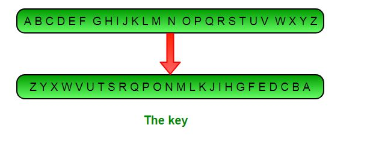

Definition: Atbash cipher is a substitution cipher with just one specific key where all the letters are reversed that is A to Z and Z to A. It was originally used to encode the Hebrew alphabets but it can be modified to encode any alphabet.
Relationship to Affine: Atbash cipher can be thought of as a special case of Affine cipher with both the keys being 25, i.e, a = 25 & b = 25

Algorithm: The following key is used in the Atbash algorithm
ABCDEFGHIJKLMNOPQRSTUVWXYZ
ZYXWVUTSRQPONMLKJIHGFEDCBA
Encryption
To encipher a message, find the letter you wish to encipher in the top row, then replace it with the letter in the bottom row.
In the example below, we encipher the message ‘Aryan’. The first letter we wish to encipher is ‘A’, which is above ‘Z’, so the first ciphertext letter is ‘Z’. The next letter is ‘R’, which is above ‘I’, so that comes next. The whole message is enciphered as:
ZIBZM
All Copyrights claimed by ATD GROUP© 2020-∞